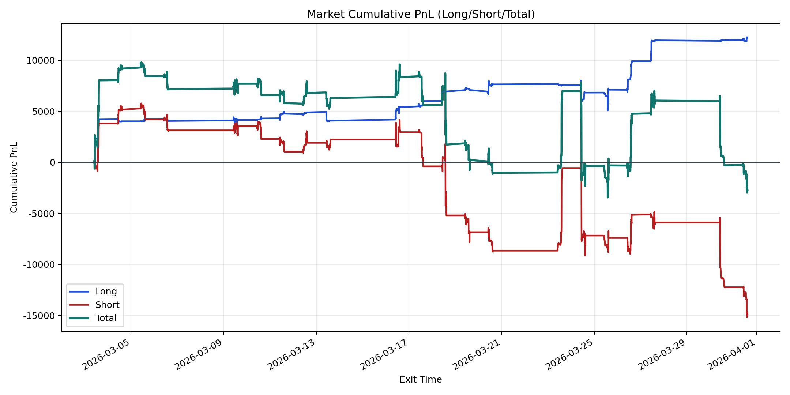
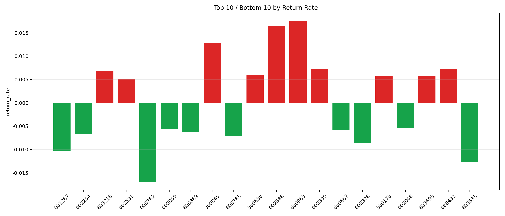

| repo_root | /home/haoranyou/data/output/alpha0.4_1w_5s_3ticks_index_filter/index_weights_1000 |
|---|---|
| period_months | 1 |
| period_label | 2026-03-03_to_2026-03-31 |
| start_time | 2026-03-03 09:50:12 |
| end_time | 2026-03-31 14:39:32 |
| n_trades | 5272 |
| n_symbols | 185 |
| total_pnl | -2721.342800000133 |
| long_total_pnl | 12129.272450000008 |
| short_total_pnl | -14850.615250000143 |
| total_entry_notional | 49779178.0 |
| long_entry_notional | 9146349.0 |
| short_entry_notional | 40632829.0 |
| total_return_rate | -5.466829524585828e-05 |
| long_return_rate | 0.0013261326951333268 |
| short_return_rate | -0.00036548317248597537 |
| top_symbols_by_return | ["600963", "002588", "300045", "688432", "000899", "603218", "300638", "603693", "300170", "002531"] |
| bottom_symbols_by_return | ["000762", "603533", "001287", "600328", "600783", "002254", "600869", "600667", "600059", "002068"] |

